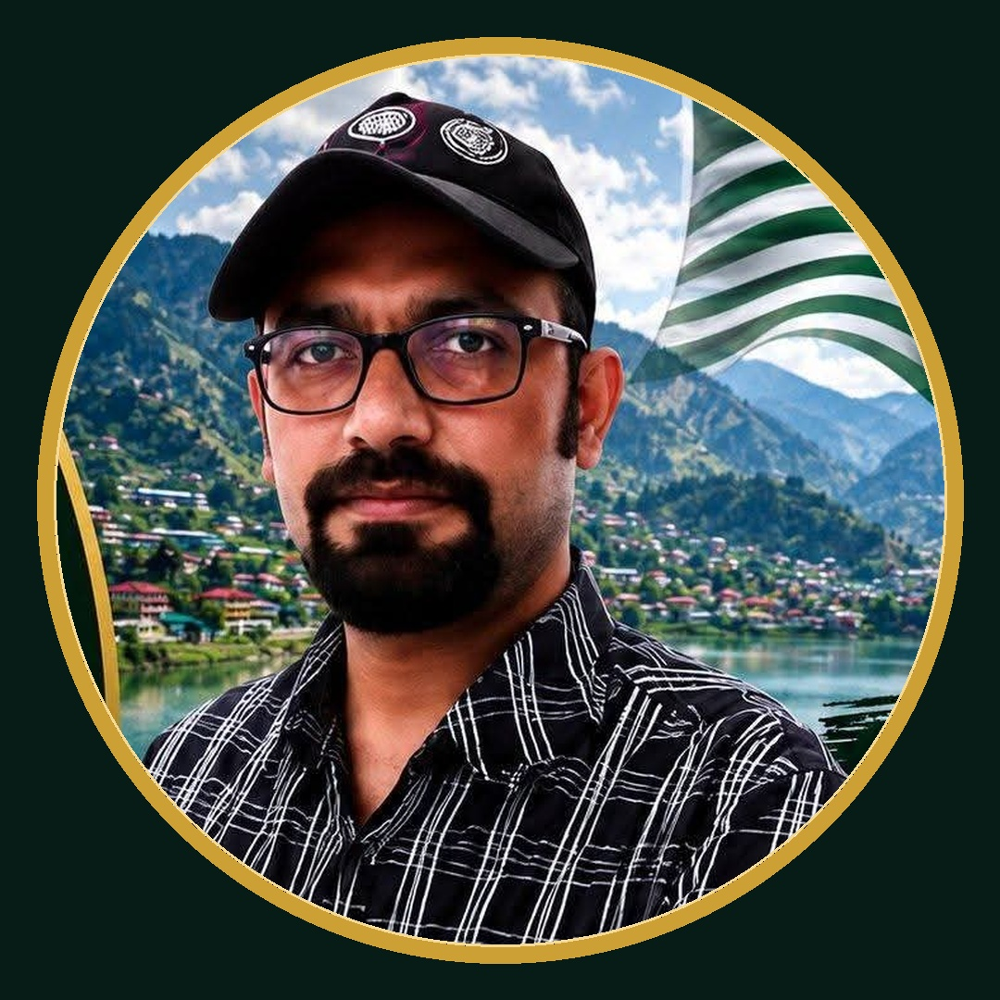

✦
کشمیر
کشمیر کے حالات، عوامی آواز اور خطے سے متعلق اہم معاملات۔
کشمیر، عوامی مسائل اور انسانی حقوق سے متعلق تحریروں، خیالات اور معلومات کا ایک ذمہ دارانہ پلیٹ فارم۔ ہماری ترجیحات حقائق کی تصدیق، پُرامن مکالمہ، اتحاد اور انسانی وقار ہیں۔

میں سردار عثمان کشمیری ہوں۔ یہ ویب سائٹ میری تحریروں، خیالات، عوامی مسائل پر مؤقف اور سماجی سرگرمیوں کو ایک جگہ منظم انداز میں پیش کرنے کے لیے بنائی گئی ہے۔ میری کوشش ہے کہ ہر بات ذمہ داری، احترام اور حتی الامکان مستند معلومات کے ساتھ قارئین تک پہنچے۔ اختلافِ رائے کا احترام، پُرامن مکالمہ اور انسانی وقار ہماری بنیادی ترجیحات ہیں۔
کشمیر کے حالات، عوامی آواز اور خطے سے متعلق اہم معاملات۔
انسانی وقار، شہری آزادیوں اور بنیادی حقوق سے متعلق آگاہی۔
تعلیم، صحت، بنیادی سہولیات اور عوامی مفاد کے معاملات۔
اتحاد، نظم و ضبط اور پُرامن جدوجہد — اختلاف کے باوجود ایک دوسرے کے احترام، انسانی جان کے تحفظ اور حقائق پر مبنی گفتگو کے ساتھ۔
عوامی مسائل اور اہم معاملات پر میری تحریریں اور مؤقف یہاں شائع ہوں گے۔
اہم معلومات اور تازہ سرگرمیوں کی ذمہ دارانہ اپ ڈیٹس۔
سماجی شعور، مکالمے اور عوامی دلچسپی کے موضوعات پر تحریریں۔
اس ویب سائٹ کے تعارفی حصے میں استعمال ہونے والی پروفائل تصویر۔
ویڈیو اپ ڈیٹس اور پیغامات کے لیے آفیشل فیس بک پیج ملاحظہ کریں۔
تازہ تحریروں، ویڈیوز اور اپ ڈیٹس کے لیے آفیشل سوشل میڈیا اکاؤنٹس سے جڑیں۔
یہ ویب سائٹ موبائل، ٹیبلٹ اور کمپیوٹر کے لیے Responsive ڈیزائن میں تیار کی گئی ہے۔